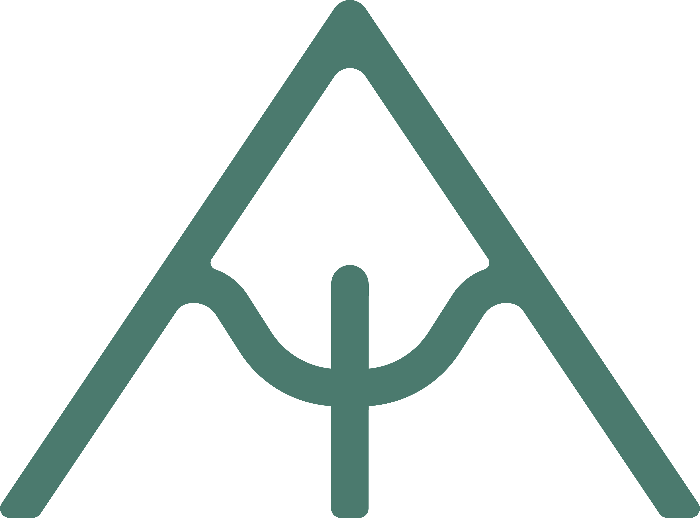

|
Alpine Climbing Kit
Alpine Kit ListAlpine climbing, glacier travel, and mixed nights out — three lists for three trip lengths. Tick as you pack; each list saves in your browser. Single-Day Climb
Light and fast, back the same dayClimb the route from a hut or valley base and return the same day. Assumes a granite line with a glacier or snow approach — drop the glacier kit if your approach is dry. The discipline that matters more than any item: alpine start, hard turnaround time. Afternoon storms are the default in the high mountains — be off the route before they build.
01
On the go Worn & On the GoWhat you set off in for the walk-in. 02
On the rope TechnicalThe rack and hardware for a single granite line. 03
In the pack PackedWarmth, safety, food, and navigation for the day. Two-Day Outing
Your day kit, plus a night outEverything in the Day Climb list, plus the overnight system below — so you're not re-checking the rack twice. Swap up to a 40–50L pack to carry it.  Start from the Day Climb tab, then add these. Your day-kit hat, gloves, and insulated jacket double as camp warmth. Honest note on the overnight choice: a bivy bag is lighter and faster but grim if the weather turns; a tent is the safer call if there's any chance of being pinned down. Let the forecast, not the gram count, make that decision.
01
The night Sleep SystemWarm and dry through a cold alpine night. 02
Fuel & water Cook SystemA hot meal and a brew at camp. 03
Camp warmth Extra Clothing for the NightA little more on top of your day layers. 04
Two days off-grid More ConsumablesExtra food, water, and power for a second day. 05
Leave no trace HousekeepingKeep the bivy clean and the descent covered. Before you start ticking
Decide your strategy firstThe honest tension on a long trip is weight. A fully self-sufficient bivy, tent, and stove setup plus two weeks of kit is a heavy haul. Most people base out of a hut or the valley and carry a stripped kit for each objective, rather than moving everything every day. Decide your approach before you pack — it changes what actually goes on your back on route versus what stays in a barrel or base bag. On your back
The route kitThe stripped, weighed selection you carry for a single objective — nothing spare. In the barrel
The base bagEverything that stays at the hut or in the valley between climbs. Weigh every item against the route. On granite objectives the classics are overwhelmingly rock, so bias the rack over the ice kit. Your ticks save only in this browser, on this device — nothing is sent to us. Return any time to keep packing, or turn saving off with the switch above.
Contents
Nine kit categoriesWork through each list and tick as you pack. The dots fill in as a category is fully packed. 01
On the rope Technical ClimbingThe hardware that keeps you on the rock and moving safely over mixed ground. 02
Granite protection The RackGranite eats cams and takes wires beautifully — build a rack for long trad lines. 03
On the ice Glacier & Crevasse RescueLight kit for dry glacier travel and getting yourself out of a crevasse. 04
High camps Sleeping & ShelterWarm, dry nights on moraine, glacier, and the odd refuge. 05
Fuel & water Cooking & HydrationA stove that works cold, and clean water from silty melt. 06
Layer system ClothingOne system, layered — from sun on the glacier to storms on the summit. 07
Getting home Navigation, Safety & PersonalRoute-finding, communication, and the kit that gets you home. 08
Before you fly Documents & AdminPaperwork, rescue cover, and cash for the huts. 09
On the go FoodEnough to move fast, plus a day in reserve. Take what you need. Weigh every item against the route, tick as you pack, and leave the rest in the barrel. |
0 of 0 items packed
Saved